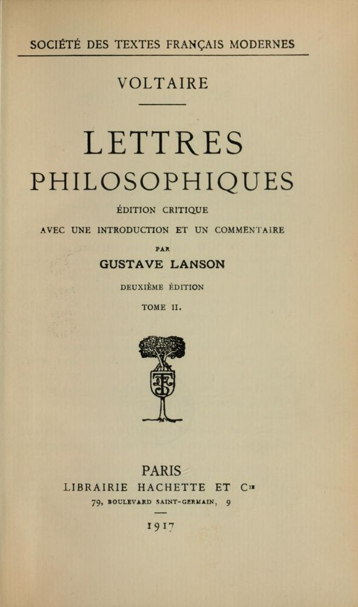
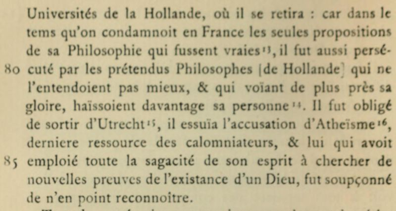

“Il essuïa l’accusation d’Atheïsme, derniere ressource des calomniateurs”
French: Lanson, tome II, letter XIV, lines 77–87, scan n11. Spelling of 1734 as Lanson prints it; his note numbers omitted. Highlighted: what Lecky uses.


… the universities of Holland, where he withdrew: for at the time when the only propositions of his philosophy that were true were being condemned in France, he was persecuted as well by the so-called philosophers [of Holland], who understood him no better, and who, seeing his fame more closely, hated his person the more. He was obliged to leave Utrecht; he suffered the accusation of atheism, the last resort of slanderers; and he who had spent all the sagacity of his mind in looking for new proofs of the existence of a God was suspected of acknowledging none.
Original French
… Universités de la Hollande, où il se retira: car dans le tems qu’on condamnoit en France les seules propositions de sa Philosophie qui fussent vraies, il fut aussi persécuté par les prétendus Philosophes [de Hollande] qui ne l’entendoient pas mieux, & qui voïant de plus près sa gloire, haïssoient davantage sa personne. Il fut obligé de sortir d’Utrecht, il essuïa l’accusation d’Atheïsme, derniere ressource des calomniateurs, & lui qui avoit emploïé toute la sagacité de son esprit à chercher de nouvelles preuves de l’existance d’un Dieu, fut soupçonné de n’en point reconnoître.
Lecky (vol. II, ch. IV, text at note 56): “the reformed clergy directed against him all the force of their animosity, and the accusation by which they endeavoured to stir up the civil power against the author of the most sublime of all modern proofs of the existence of the Deity, was atheism.” Voltaire supplies the charge and the irony; the clergy and the appeal to the civil power are not on this page.
Further down the rabbit hole
Sources that Lecky cites in the notes next to the ones that cite this page.
- Gioja, Filosofia della statisticaThe queen who nearly banned Linnaeus for the sex lives of plants
- Bayle, Dictionnaire historique et critiqueWhat Bayle really said about Augustine and Socinus
- Hallam, Literature of Europe and Constitutional HistoryHow Lecky quotes Hallam on persecution
- Palmer, A Treatise on the Church of Christ“Whosoever is separated from the Catholic Church … will not have life”
- Henry, The Life and Times of John Calvin, vol. II“Placet mihi Luthero”: Luther signs for the sword
- Temple, Observations upon the United ProvincesWhy Holland was tolerant: an English ambassador’s answer


Backlinks
Every place in Rationalism in Europe that links to this page (generated automatically when the site is built).
- Chapter IV, Part II: note 56